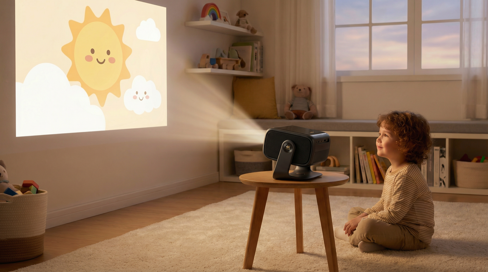

If They're Going to Watch
A gentle list — and why to put it on the wall.
This isn't a nudge to switch something on. It's for the real world — where most children do end up watching something. If that's going to happen, here's a gentler list, and a much better way to do it.
The honest position
Less is better, and none is fine. We're not recommending screen time — the real work of these years is play, talk and the outdoors. But pretending no child ever watches anything helps nobody.
So the two things that actually matter are: what they watch — slow, kind, non-toxic, not the frantic over-stimulating stuff — and how they watch it. The second one matters more than most people realise.
Put it on the wall, not in their hands
If they're watching, use a projector on the wall — not a tablet, not a phone, not up close to a screen. This one change removes most of what's actually harmful about watching.
A child staring down at a tablet holds their eyes locked at one short distance for a long time, in a small pool of bright, close light. That fixed near-focus is tied to the rise in short-sightedness — a real reason so many children end up in glasses — and the closeness and glare wind them up and agitate them.
On a big wall it's the opposite. Their eyes range and refocus across a large, distant image the way eyes are meant to. They can stand back, move around, even play while it's on — bodies free, not hunched. And a wall is social: everyone watches together, facing the same way, instead of each child buried in a private glowing rectangle. Same show, a completely different thing for a small body.
Gentle to start
The Berenstain Bears Younger
Kind, slow, everyday family lessons — sharing, telling the truth, trying again. Calm pacing, nothing frightening.
Franklin Younger
Small, warm stories about friendship, worries and getting along. Gentle voice, unhurried, quietly reassuring.
Little Bear Younger
Soft, imaginative and slow — a little bear, his family and his friends. About as calm as watching gets.
Rupert Bear A little later
A step up in pace and adventure — more happening, more interesting for a slightly older child — but still wholesome and not toxic.
A few films — edited With care
Some classic films are lovely once the scary or nasty parts are taken out. Sleeping Beauty, for instance, is gentle and beautiful without the frightening scenes. We'll build a short list of films worth watching, and flag the bits worth skipping for a young child.